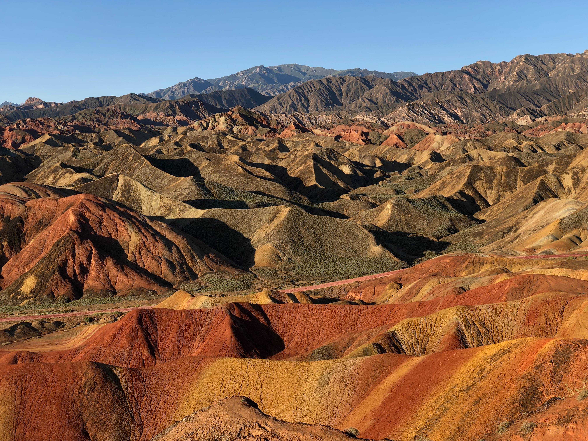

Colored Rocks Zhangye Dankxia, China
 July 22, 2017
35 Comments
July 22, 2017
35 Comments
The geological park in the Chinese province of Gansu is known for an unusual natural treasure - colorful mountain formations from multi-colored rocks of sandstone and conglomerates, relating mainly to the Cretaceous period. About a hundred million years ago, on the site of the mountains there was a natural pool, which later dried up, and its sediment was oxidized, taking on an unusually beautiful variegated color.